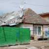
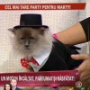

Oare jurnaliştii români sunt rău intenţionaţi sau doar idioţi? Căci nu se întrezăreşte o a treia explicaţie pentru îndârjirea cu care aproape toată presa susţine, ba chiar amplifică inflaţia. Mai că nu trece zi în care să nu ne fugărească, ba pe la televizor, ba prin ziare, informaţia că se vor scumpi alimentele. A dat [...]

Orice femeie însărcinată ar trebui să ştie că medicamentul Ciprofloxacin poate defecta aparatul ecograf, duce la orbirea doctorilor obstetricieni, cărora le produce halucinaţii şi schimbă previziunea despre sexul copilului de la un examen medical la celălalt. Acestea sunt concluziile rezonabile care decurg logic dintr-un comunicat al Ministerului Justiţiei referitor la cazul Bejan. Ce înseamnă evaluare [...]
Peste două miliarde şi jumătate de lei vechi (267.159 RON) a primit Editura Litera de la Guvernul României, prin Departamentul pentru Românii de Pretutindeni (DRP), numai în anul 2012. Mai modestă, Editura Noi s-a mulţumit cu doar 1 miliard de lei vechi subvenţie din bani publici. Bonus pentru fraţii PD-L(itera) de la Eugen Tomac Finanţările nerambursabile [...]

După ce am surprins chintesenţa procesului decizional la alegătorul român tipic în doar trei fotografii, astăzi vă propunem un clip. Cele 90 de secunde ale filmului rezumă, simbolic, spectacolul campaniei electorale în România profundă. Interpretul rolului Nea Titi nu-i un dement temporar scăpat de la spitalul de psihiatrie Socola, cum aţi putea crede. E un respectabil [...]

Unii români au antene parabolice performante, montate pe cocioabe de paiantă ce stau să se dărâme. Alţii au ultimul model de iPhone de pe care dau bip-uri pentru ca să nu-şi consume creditul de pe cartelă. Avem concetăţeni care îşi parchează Ferrari-ul roşu-aprins în faţa blocului din Ferentari în care locuiesc. Şi vecini care îşi [...]
Relaţia dintre alegătorul român şi politicianul care îl reprezintă e atât de complicată încât poate fi descrisă sugestiv doar prin imagini. Accesul la putere e rezultatul unor strategii complexe, care vizează management-ul comunicării politice, dar şi competenţa decizională. Iată cum decurge exerciţiul democratic românesc de mai bine de 20 de ani: 1) Platforma program Mai [...]

Dacă în cazul candidaţilor Vasile Laba şi Marcel Muia vina pentru ridicol e afundată în istoricul familial, Tati Norocosul nu mai are nicio scuză. Asta pentru că numele lui real e Nicolae Viorel Oprănescu, iar alegerea de a se prezenta alegătorilor drept tăticul cu bulan îi aparţine. Priviţi minune de afiş din campania electorală pentru funcţia [...]

Un cot de copil face 600 RON (6 milioane de lei vechi), fără TVA. Sursa informaţiei este medicul penal Ioan Dobrescu, al cărui târg de vieţi şi sănătate are loc zilnic la Clinica de Pediatrie nr. 1 din Cluj. Banii se pot plăti şi în tranşe, caz în care avansul necesar e minimum jumătate din [...]

Peste 10.000 de medici români au ales să profeseze în străinătate, după ce şi-au obţinut diplomele pe cheltuiala statului român. De fiecare dată când un copil moare în condiţii suspecte, reîncepe jelania naţională având ca teme centrale subfinanţarea sistemului sanitar şi exodului specialiştilor. E o tânguială sterilă, nu se dezbat soluţii, ci se constată drama. Pentru că [...]

Suntem un neam de privitori pe gaura cheii. De aceea, mai toţi artiştii, sportivii, politicienii, ba chiar şi scriitorii de blog simt nevoia să se dezbrace de secrete sub ochii publicului larg. Persoane publice de tot felul îşi deschid în faţa telespectatorilor şi cititorilor de tabloide casele, maşinile, dulapurile, calculatoarele sau coşurile de gunoi. Nu [...]

Liviu Marian Pop, ministrul agramat, specialistul probei dezacorduri-viteză, ne-a arătat cum poţi batjocori limba română elementară în mai puţin de un minut. Ministrul Educației Naționale scrie la fel de corect, logic şi coerent precum se exprimă prin viu-grai. Adică sub nivelul unui absolvent mediocru al unui liceu industrial de provincie, genul băieţaş de cartier. Dacă în [...]

Acum o lună de zile, când am scris despre iminenta spargere a bulei speculative Facebook (în articolul Facebook – începe deja spargerea bulei? – 24 aprilie), nu ne-am imaginat că declinul se va produce chiar din a doua şedinţă de tranzacţionare bursieră şi va fi însoţit de vaiete panicarde. Ziarul Financiar titrează: “Facebook s-a prăbuşit [...]